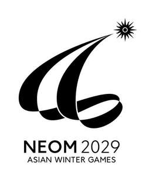
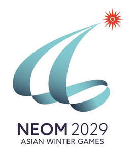

Trade Mark Journal No.2025/009 28 February 2025
UK00004160152 13 February 2025 (9,14,16,18,21,24,25,28,32,35,36,38,41,42)
Mark 1

Mark 2

- Class 9
- 3D scanners; 3D spectacles; Abacuses; Accelerometers; Accumulators, electric; Acid hydrometers; Acidimeters for batteries; Sound alarms; Acoustic conduits; Acoustic couplers; Acoustic couplers; Adding machines; Aerials; Aerometers; Air analysis apparatus; Airbags for safety purposes for fall protection; Alarm bells, electric; Alarms; Alcoholmeters; Alidades; Altimeters; Ammeters; Amplifiers; Amplifiers for servo motors; Amplifying tubes; amplifying valves; Anemometers; Animal signalling rattles for directing livestock; Animated cartoons; Anode batteries; high tension batteries; Anodes; Answering machines; Anti-glare glasses; Anti-interference devices [electricity]; Anti-theft warning apparatus; Anticathodes; Apertometers [optics]; Apparatus and installations for the production of X- rays, not for medical purposes; Apparatus and instruments for astronomy; Apparatus and instruments for physics; Apparatus for changing record player needles; Apparatus for editing cinematographic film; Apparatus for generating gas for calibration purposes; Apparatus for measuring the thickness of skins; Apparatus for testing breast milk, other than for medical or veterinary use; Apparatus to check franking; apparatus to check stamping mail; Appliances for measuring the thickness of leather; Armatures [electricity]; Asbestos clothing for protection against fire; Asbestos gloves for protection against accidents; Asbestos screens for firemen; Audio interfaces; Audio mixers; Audio- and video-receivers; Audiovisual teaching apparatus; Automated teller machines [ATM]; Automatic indicators of low pressure in vehicle tyres; Autonomous navigation systems for ships; Azimuth instruments; Baby monitors; Baby scales; Bags adapted for laptops; Balances [steelyards]; lever scales [steelyards]; steelyards [lever scales]; Balancing apparatus; Bar code readers; Barometers; Bathroom scales; Batteries for electronic cigarettes; Batteries, electric; Batteries, electric, for vehicles; accumulators, electric, for vehicles; Battery boxes; accumulator boxes; Battery chargers; Battery jars; accumulator jars; Beacons, luminous; Bells [warning devices]; Betatrons; Binoculars; Biochips; Biometric identity cards; Biometric locks; Biometric passports; e-passports; Bioreactors for cell culturing for scientific research; Bioreactors for laboratory use; Black boxes [data recorders]; Blueprint apparatus; Body harnesses for support when lifting loads; Boiler control instruments; Branch boxes [electricity]; Breathalyzers; Breathing apparatus for underwater swimming; Breathing apparatus, not for medical purposes; Bullet-proof clothing; Bullet-proof vests; bullet-proof waistcoats; Buzzers; Cabinets for loudspeakers; Cables, electric; Calculating machines; Calibrating rings; Calipers; Calorimeters; Camcorders; Cameras [photography]; Capillary tubes for laboratory use; Carpenters' rules; Carriers for dark plates [photography]; Cases especially made for photographic apparatus and instruments; Cases for smartphones; Cases for smartphones incorporating a keyboard; Cash registers; Cassette players; Cathodes; Cathodic anti-corrosion apparatus; Cell phone straps; Cell switches [electricity]; reducers [electricity]; Centering apparatus for photographic transparencies; Chargers for electric accumulators; Chargers for electronic cigarettes; Charging stations for electric vehicles; Chemistry apparatus and instruments; Chips [integrated circuits]; Choking coils [impedance]; Chromatography apparatus for laboratory use; Chronographs [time recording apparatus]; Cinematographic cameras; Cinematographic film, exposed; Circuit breakers; Circuit closers; Circular slide rules; Cleaning apparatus for phonograph records; cleaning apparatus for sound recording discs; Climate control digital thermostats; Close-up lenses; Clothing especially made for laboratories; Clothing for protection against accidents, irradiation and fire; Clothing for protection against fire; garments for protection against fire; Coaxial cables; Coils, electric; Coin-operated mechanisms for television sets; Collectors, electric; Commutators; Compact disc players; Compact discs [audio-video]; Compact discs [read-only memory]; Comparators; Compasses for measuring; Computer game software, downloadable; Computer game software, recorded; Computer hardware; Computer keyboards; Computer memory devices; Computer network routers; Computer operating programs, recorded; Computer peripheral devices; Computer programs, downloadable; Computer programs, recorded; Computer screen saver software, recorded or downloadable; Computer software applications, downloadable; Computer software platforms, recorded or downloadable; Computer software, recorded; Computers; Condensers; Conductors, electric; Connected bracelets [measuring instruments]; Connections for electric lines; Connectors [electricity]; Contact lens cases incorporating ultrasonic cleaning functions; Contact lenses; Contacts, electric; Containers for contact lenses; Containers for microscope slides; Control panels [electricity]; Controllers for servo motors; Converters, electric; Cooling pads for laptop computers; Copper wire, insulated; Cordless telephones; Correcting lenses [optics]; Cosmographic instruments; Counterfeit coin detectors; Counters; meters; Couplers [data processing equipment]; Couplings, electric; connections, electric; Covers for electric outlets; Covers for personal digital assistants [pdas]; Covers for smartphones; Covers for tablet computers; Crash test dummies; Credit card terminals; Crucibles [laboratory]; cupels [laboratory]; Current rectifiers; Cyclotrons; Darkroom lamps [photography]; Darkrooms [photography]; Dashboard mats adapted for holding mobile telephones and smartphones; Data gloves; Data processing apparatus; Data sets, recorded or downloadable; Decompression chambers; Decorative magnets; Demagnetizing apparatus for magnetic tapes; Densimeters; Densitometers; Detectors; Devices for the projection of virtual keyboards; Diagnostic apparatus, not for medical purposes; Diaphragms [acoustics]; Diaphragms [photography]; Diaphragms for scientific apparatus; Dictating machines; Diffraction apparatus [microscopy]; Digital photo frames; Digital signs; Digital weather stations; Directional compasses; Discharge tubes, electric, other than for lighting; electric discharge tubes, other than for lighting; Disk drives for computers; Disks, magnetic; Distance measuring apparatus; Distance recording apparatus; apparatus for recording distance; Distillation apparatus for scientific purposes; Distribution boards [electricity]; Distribution boxes [electricity]; Distribution consoles [electricity]; Dive skins; Divers' masks; Diving suits; DNA chips; Dog whistles; Dosage dispensers, not for medical use [measuring apparatus]; Dosimeters; Downloadable computer software for managing crypto asset transactions using blockchain technology; Downloadable cryptographic keys for receiving and spending crypto assets; Downloadable digital files authenticated by non- fungible tokens [nfts]; Downloadable e-wallets; Downloadable emoticons for mobile phones; Downloadable graphics for mobile phones; Downloadable image files; Downloadable music files; Downloadable ring tones for mobile phones; Drainers for use in photography; photographic racks; Dressmakers' measures; Droppers for measuring, other than for medical or household purposes; Dry suits; Drying apparatus for photographic prints; Drying racks [photography]; Ducts [electricity]; Dust masks incorporating air purification; DVD players; Dynamometers; Ear pads for headphones; Ear plugs for divers; Earpieces for remote communication; Effects pedals for guitars; Egg timers [sandglasses]; hourglasses; Egg-candlers; Electric actuators; Electric and electronic effects units for musical instruments; Electric apparatus for commutation; Electric door bells; Electric installations for the remote control of industrial operations; Electric linear actuators; Electric loss indicators; Electric plugs; Electric sockets; Electric wire harnesses for automobiles; Electrical adapters; Electricity conduits; Electrified fences; Electrified rails for mounting spot lights; Electro-dynamic apparatus for the remote control of railway points; Electro-dynamic apparatus for the remote control of signals; Electrolysis apparatus for laboratory use; Electromagnetic coils; Electronic access control systems for interlocking doors; Electronic agendas; Electronic book readers; Electronic collars to train animals; Electronic controllers for servo motors; Electronic interactive whiteboards; Electronic key fobs being remote control apparatus; Electronic notice boards; Electronic numeric displays; Electronic pens [visual display units]; Electronic pocket translators; Electronic publications, downloadable; Electronic sheet music, downloadable; Electronic tags for goods; Encoded identification bracelets, magnetic; Encoded key cards; Encoded magnetic cards; Enlarging apparatus [photography]; Epidiascopes; Equalizers [audio apparatus]; Ergometers; Evacuation chairs; Exposure meters [light meters]; Eyepieces; Eyewear; Facsimile machines; Fermentation apparatus for laboratory use; Fiber optic cables; fiber optic cables; Film cutting apparatus; Films, exposed; Filters for respiratory masks, not for medical purposes; Filters for ultraviolet rays, for photography; Filters for use in photography; Finger sizers; Fire alarms; Fire beaters; Fire blankets; Fire boats; Fire engines; Fire escapes; Fire extinguishers; Fire extinguishing apparatus; Fire hose; Fire hose nozzles; Fire pumps; Fire-extinguishing balls flash lamps for smartphones; Flash lamps for smartphones; Flash-bulbs [photography]; Flashing lights [luminous signals]; Flashlights [photography]; Floppy disks; Flowmeters; Fluorescent screens; Fog signals, non-explosive; Foldable smartphones; Food analysis apparatus; Frames for photographic transparencies; Frequency extenders; Frequency meters; Ovens for laboratory use; Furniture especially made for laboratories; Fuse wire; Fuses; Galena crystals [detectors]; Galvanic batteries; Galvanic cells; Galvanometers; Gas testing instruments; Gasometers [measuring instruments]; Gauges; Gimbals for digital cameras; Gimbals for smartphones; Glazing apparatus for photographic prints; Global Positioning System [GPS] apparatus; Gloves for divers; Gloves for protection against accidents; Gloves for protection against X-rays for industrial purposes; Goggles for sports; Grids for batteries; Hairdressing training heads [teaching apparatus]; Hands-free kits for telephones; Hands-free kits for telephones; Haptic suits, other than for medical purposes; Head cleaning tapes [recording]; Head guards for sports; Head-mounted displays; Head-up display apparatus for vehicles; Headgear being protective helmets; Headphones; Headsets; Headsets for playing video games; Heat regulating apparatus; Height measuring instruments; Heliographic apparatus; Hemline markers; High-frequency apparatus; Holders adapted for mobile telephones and smartphones; Holders for electric coils; Holograms; Home automation hubs; smart home hubs; Horns for loudspeakers; Humanoid robots having communication and learning functions for assisting and entertaining people; Humanoid robots with artificial intelligence for preparing beverages; Humanoid robots with artificial intelligence for use in scientific research; Hydrometers; Hygrometers; Identification sheaths for electric wires; Identification threads for electric wires; Identity cards, magnetic; Igniting apparatus, electric, for igniting at a distance; electric apparatus for remote ignition; Ignition batteries; In-car telephone handset cradles; Incubators for bacteria culture; Inductors [electricity]; Infrared detectors; Ink cartridges, unfilled, for printers and photocopiers; Insulating gloves for protection against accidents; Integrated circuit cards [smart cards]; smart cards [integrated circuit cards]; Integrated circuits; Interactive touchscreen terminals; Intercommunication apparatus; Interfaces for computers; Internal cooling fans for computers; Inverters [electricity]; Invoicing machines; Ionization apparatus not for the treatment of air or water; Jigs [measuring instruments]; Joysticks for use with computers, other than for video games; Juke boxes for computers; Juke boxes, musical; coin-operated musical automata [juke boxes]; Junction boxes [electricity]; Junction sleeves for electric cables; Knee-pads for workers; Laboratory centrifuges; Laboratory pipettes; Laboratory robots; Laboratory trays; Lactodensimeters; Lactometers; Lanyards for cell phones; Laptop computers; Lasers, not for medical purposes; Lens hoods; Lenses for astrophotography; Letter scales; Levelling instruments; Levelling staffs [surveying instruments]; rods [surveying instruments]; Levels [instruments for determining the horizontal]; Life belts; Life buoys; Life jackets; Life-saving apparatus and equipment; Life-saving capsules for natural disasters; Life-saving rafts; Lifeboats; Light dimmers [regulators], electric; light regulators [dimmers], electric; Light-emitting diodes [LED]; Light-emitting electronic pointers; Lighting ballasts; Lightning conductors; lightning arresters; lightning rods; Limiters [electricity]; Locks, electric; Logs [measuring instruments]; Loudspeakers; Magic lanterns; Magnetic data media; Magnetic encoders; Magnetic resonance imaging [MRI] apparatus, not for medical purposes; Magnetic tape units for computers; Magnetic tapes; Magnetic wires; Magnets; Magnifying glasses [optics]; Marine compasses; Marine depth finders; Marking buoys; Marking gauges [joinery]; Masts for wireless aerials; Material testing instruments and machines; Materials for electricity mains [wires, cables]; Mathematical instruments; Measures; Measuring apparatus; Measuring devices, electric; Measuring glassware; graduated glassware; Measuring instruments; Measuring spoons; Mechanical signs; Mechanisms for coin-operated apparatus; Mechanisms for counter-operated apparatus; Megaphones; Memory cards for video game machines; Mercury levels; Metal detectors for industrial or military purposes; Meteorological balloons; Meteorological instruments; Metronomes; Micrometer screws for optical instruments; Micrometers; micrometer gauges; Microphones; Microprocessors; Microscopes; Microtomes; Mileage recorders for vehicles; kilometer recorders for vehicles; Mirrors [optics]; Mirrors for inspecting work; Missile warning systems; Mobile phone chargers; Mobile phone ring holders; Mobile phone ring stands; Mobile phone screen protectors; Mobile telephones; cell phones; Modems; Money counting and sorting machines; Monitoring apparatus, other than for medical purposes; Monitors [computer hardware]; Monitors [computer programs]; Mouse [computer peripheral]; Mouse pads; Mouth guards for sports; Musical instrument digital interface controllers being audio interfaces; Nanoparticle size analyzer; nanoparticle size analyzers; Nautical apparatus and instruments; Naval signaling apparatus; Navigation apparatus for vehicles [on-board computers]; Navigational instruments; Needles for record players; styli for record players; Needles for surveying compasses; Neon signs; Nets for protection against accidents; Neural helmets, not for medical purposes; Nose clips for divers and swimmers; Notebook computers; Objectives [lenses] [optics]; Observation instruments; Octants; Ohmmeters; Optical apparatus and instruments; Optical character readers; Optical condensers; Optical data media; Optical discs; Optical fibers [light conducting filaments]; optical fibers [light conducting filaments]; Optical glass; Optical lanterns; optical lamps; Optical lenses; Organic light-emitting diodes [OLED]; Oscillographs; Oxygen transvasing apparatus; Ozone generators for calibration purposes; Padlocks, electronic; Parking meters; Parking sensors for vehicles; Particle accelerators; Pedometers; Peepholes [magnifying lenses] for doors; Periscopes; Personal digital assistants [PDAS]; Personal stereos; Petri dishes; Petrol gauges; gasoline gauges; Phonograph records; sound recording discs; Photocopiers [photographic, electrostatic, thermic]; Photometers; Phototelegraphy apparatus; Photovoltaic cells; Piezoelectric sensors; Pince-nez; Pitot tubes; Plane tables [surveying instruments]; Planimeters; Plates for batteries; Plotters; Plumb bobs; Plumb lines; Pocket calculators; Polarimeters; Portable document scanners; Portable media players; Portable power chargers; Portable speakers; Portable ultrafine dust meters; Precision balances; Precision measuring apparatus; Pressure gauges; manometers; Pressure indicator plugs for valves; Pressure indicators; Pressure measuring apparatus; Printed circuit boards; Printed circuits; Printers for use with computers; Prisms [optics]; Probes for scientific purposes; Processors [central processing units]; central processing units [processors]; Projection apparatus; Projection screens; Protection devices against X-rays, not for medical purposes; Protection devices for personal use against accidents; Protective films adapted for computer screens; Protective films adapted for smartphones; Protective helmets; Protective helmets for sports; Protective masks, not for medical purposes; Protective suits for aviators; Protractors [measuring instruments]; Punched card machines for offices; Push buttons for bells; Pyrometers; Quantity indicators; Quantum computers; Quantum dot light-emitting diodes [QLED]; Radar apparatus; Radar apparatus; Radiological apparatus for industrial purposes; Radiology screens for industrial purposes; Radios; Radiotelegraphy sets; Radiotelephony sets; Railway traffic safety appliances; Range finders; telemeters; Readers [data processing equipment]; Rearview cameras for vehicles; Record players; Reflective articles for wear, for the prevention of accidents; Reflective safety vests; Refractometers; Refractors; Regulating apparatus, electric; Relays, electric; Remote control apparatus; Rescue flares, non-explosive and non-pyrotechnic; Rescue flares, non-explosive and non-pyrotechnic; Resistances, electric; Respirators for filtering air, not for medical purposes; Respiratory masks, not for medical purposes; Resuscitation mannequins [teaching apparatus]; Resuscitation training simulators; Retorts; Retorts' stands; Revolution counters; Rheostats; Riding helmets; Ring sizers; Road signs, luminous or mechanical; Rods for water diviners; Rulers [measuring instruments]; Rules [measuring instruments]; Saccharometers; Safety nets; life nets; Safety restraints, other than for vehicle seats and sports equipment; Safety signs [luminous]; Safety tarpaulins; Salinometers; Satellite finder meters; Satellite navigational apparatus; Satellites for scientific purposes; Scales; Scales with body mass analyzers; Scanners [apparatus] for performing automotive diagnostics; Scanners [data processing equipment]; Screens [photography]; Screens for photoengraving; Screw-tapping gauges; Security surveillance robots; Security tokens [encryption devices]; Self-checkout terminals; Selfie lenses; Selfie ring lights for smartphones; Selfie sticks [hand-held monopods]; Semi-conductors; Sextants; Sheaths for electric cables; Shoes for protection against accidents, irradiation and fire; Shutter releases [photography]; Shutters [photography]; Sighting telescopes for firearms; telescopic sights for firearms; Signal bells; Signal lanterns; Signalling buoys; Signalling panels, luminous or mechanical; Signalling whistles; Signals, luminous or mechanical; Signs, luminous; Simulators for the steering and control of vehicles; Sirens; Sleeves for laptops; Slide calipers; Slide projectors; transparency projection apparatus; Slide-rules; Slope indicators; clinometers; gradient indicators; inclinometers; Smart rings; Smart speakers; Smartglasses; Smartphones; Smartwatches; Smoke detectors; Snorkels; Software as a medical device [samd], downloadable; Solar batteries; Solar panels for the production of electricity; Solderers' helmets; Solenoid valves [electromagnetic switches]; Sonars; Sound locating instruments; Sound recording apparatus; Sound recording carriers; Sound recording strips; Sound reproduction apparatus; Sound transmitting apparatus; Sounding apparatus and machines; Sounding leads; Sounding lines; Spark-guards; Speaking tubes; Spectacle cases; eyeglass cases; Eyeglass chains; Eyeglass cords; Eyeglass frames; Eyeglass lenses; Eyeglasses; Color blindness correction glasses; spectacles for correcting color blindness; Spectrograph apparatus; Spectroscopes; Speed checking apparatus for vehicles; Speed indicators; Speed measuring apparatus [photography]; Speed regulators for record players; Spherometers; Spirit levels; Spools [photography]; Sports whistles; Sprinkler systems for fire protection; Square rulers for measuring; Squares for measuring; Stage lighting regulators; Stands adapted for laptops; Stands for photographic apparatus; Starter cables for motors; Steering apparatus, automatic, for vehicles; Step-up transformers; Stereoscopes; Stereoscopic apparatus; Stills for laboratory experiments; Stroboscopes; Subwoofers; Sulfitometers; Sunglasses; Sunglasses for pets; Surveying apparatus and instruments; Surveying chains; Surveying instruments; Surveyors' levels; Survival blankets; Switchboards; Switchboxes [electricity]; Switches, electric; T-squares for measuring; Tablet computers; Tachometers; Tape recorders; Taximeters; Teaching apparatus; Teaching robots; Teeth protectors; Telecommunication apparatus in the form of jewellery; Telegraph wires; Telegraphs [apparatus]; Telephone apparatus; Telephone receivers; Telephone transmitters; Telephone wires; Telepresence robots; Teleprinters; teletypewriters; Teleprompters; Telerupters; Telescopes; Telescopic sights for artillery; Television apparatus; Temperature indicator labels, not for medical purposes; Temperature indicators; Terminals [electricity]; Test tubes; Testing apparatus not for medical purposes; Theft prevention installations, electric; Theodolites; Thermal imaging cameras; Thermionic valves; thermionic tubes; Thermo-hygrometers; Thermometers, not for medical purposes; Thermostats; Thermostats for vehicles; Thin client computers; Thin film speakers; Thread counters; Ticket dispensing terminals, electronic; Ticket printers; Time clocks [time recording devices]; Time recording apparatus; Time switches, automatic; Tone arms for record players; Toner cartridges, unfilled, for printers and photocopiers; Totalizators; Trackballs [computer peripherals]; Traffic cones; Traffic-light apparatus [signalling devices]; Transformers [electricity]; Transistors [electronic]; Transmitters [telecommunication]; Transmitters of electronic signals; Transmitting sets [telecommunication]; Transparencies [photography]; slides [photography]; Transponders; Triodes; Tripods for cameras; Urinometers; USB flash drives; User-programmable humanoid robots, not configured; Vacuum gauges; Vacuum tubes [radio]; Variometers; Vehicle breakdown warning triangles; Vehicle radios; Verniers; Video baby monitors; Video cassettes; Video game cartridges; Video mixing desks; Video projectors; Video recorders; Video screens; Video telephones; Videotapes; Viewfinders, photographic; Virtual reality headsets; Viscosimeters; Visors for helmets; Voltage regulators for vehicles; Voltage surge protectors; Voltmeters; Voting machines; Wafers for integrated circuits; Wah-wah pedals; Walkie-talkies; Warning signs [luminous]; Washing trays [photography]; Water level indicators; Wavemeters; Wearable activity trackers; Wearable computers; Wearable speakers; Wearable video display monitors; Weighbridges; Weighing apparatus and instruments; Weighing machines; Weight belts for divers; Weights; Wet suits; Wheel alignment meters; Whistle alarms; Wind socks for indicating wind direction; Wire connectors [electricity]; Wireless portable printers for use with laptops and mobile devices; Wireless speaker microphones; Wires, electric; Workmen's protective face-shields; Wrist rests for use with computers; X-ray apparatus not for medical purposes; X-ray films, exposed; X-ray photographs, other than for medical purposes; X-ray tubes not for medical purposes.
- Class 14
- Agates; Alarm clocks; Alloys of precious metal; Anchors [clock- and watchmaking]; Atomic clocks; Badges of precious metal; Barrels [clock- and watchmaking]; Beads for making jewellery; Boxes of precious metal; Bracelets [jewellery]; Bracelets made of embroidered textile [jewellery]; Brooches [jewellery]; Cabochons; Chains [jewellery]; Charms for key rings, charms for key chains; Chronographs [watches]; Chronometers; Chronometric instruments; Chronoscopes; Clasps for jewellery; Clock cases; Clock hands; Clocks; Clocks and watches, electric; Clockworks; Cloisonné jewellery; Coins; Commemorative statuary cups of precious metal; Control clocks [master clocks]; Copper tokens; Cuff links; Dials [clock- and watchmaking]; Diamonds; Earrings; Gold thread [jewellery]; Gold, unwrought or beaten; Hat jewellery; Ingots of precious metals; Iridium; Ivory jewellery; Jet, unwrought or semi-wrought; Jewellery; Jewellery boxes; Jewellery charms; Jewellery findings; Jewellery hat pins; Jewellery of yellow amber; Jewellery rolls; Key rings [split rings with trinket or decorative fob], key chains [split rings with trinket or decorative fob]; Lanyards for keys; Lockets [jewellery]; Medals; Misbaha [prayer beads]; Movements for clocks and watches; Necklaces [jewellery]; Olivine [gems], peridot; Ornamental pins; Ornaments of jet; Osmium; Palladium; Paste jewellery, [costume jewelry]; Pearls [jewelry]; Pearls made of ambroid [pressed amber]; Pendulums [clock- and watchmaking]; Pins [jewelry]; Platinum [metal]; Precious metals, unwrought or semi-wrought; Precious stones; Presentation boxes for jewellery; Presentation boxes for watches; Prize cups of precious metal; Retractable key chains; Rhodium; Rings [jewelry]; Rosaries, chaplets; Ruthenium; Semi-precious stones; Sew-on tags of precious metal for clothing; Shoe jewellery; Silver thread [jewellery]; Silver, unwrought or beaten; Spinel [precious stones]; Split rings of precious metal for keys; Spun silver [silver wire]; Stopwatches l; Sundials; Threads of precious metal [jewellery], wire of precious metal [jewellery]; Tie clips; Tie pins; Watch bands, straps for wristwatches; Watch cases [parts of watches]; Watch chains; Watch chains, watch crystals; Watch hands; Watch springs; Watches; Works of art of precious metal; Wristwatches. .
- Class 16
- Absorbent sheets of paper or plastic for foodstuff packaging; Address plates for addressing machines; Address stamps; Addressing machines; Adhesive tape dispensers [office requisites]; Adhesive tapes for stationery or household purposes; Adhesives [glues] for stationery or household purposes; Advertisement boards of paper or cardboard; Albums, scrapbooks; Almanacs; Animation cels; Announcement cards [stationery]; Apparatus for mounting photographs; Watercolors (aquarelles) [paintings]; Architects' models; Arithmetical tables, calculating tables; Artists' watercolour, saucers of artists' watercolor; Atlases; Baggage claim check tags of paper; Bags [envelopes, pouches] of paper or plastics, for packaging; Baking paper; Balls for ball-point pens; Banknotes; Banners of paper; Barcode ribbons; Bibs of paper; Bibs, sleeved, of paper; Binding strips [bookbinding]; Biological samples for use in microscopy [teaching materials]; Blackboards; Blotters; Blueprints, plans; Bookbinding apparatus and machines [office equipment]; Bookbinding material; Bookends; Booklets; Bookmarkers; Books; Bottle envelopes of paper or cardboard; Bottle wrappers of paper or cardboard; Boxes of paper or cardboard; Bunting of paper; Calendars; Canvas for painting; Carbon paper; Cardboard tubes; Cardboard; Cards, charts; Carrier bags of paper or plastic, shopping bags of paper or plastic; Cases for stamps [seals]; Catalogues; Chalk for lithography; Chalk holders; Charcoal pencils; Chart pointers, non-electronic; Chromolithographs; Cigar bands; Clipboards; Clips for name badge holders [office requisites]; Clips for offices, staples for offices; Bookbinding cloth; Coasters of paper; Colouring books; Colouring pictures; Comic books; Compasses for drawing; Composing frames [printing]; Composing sticks; Conical paper bags; Copying paper [stationery]; Cords for bookbinding; Correcting fluids [office requisites]; Correcting ink [heliography]; Correcting tapes [office requisites]; Covers [stationery], wrappers [stationery]; Cream containers of paper; Credit card imprinters, non-electric; Dental tray covers of paper; Desk mats; Desktop cabinets for stationery [office requisites]; Diagrams; Document files [stationery]; Document holders [stationery]; Document laminators for office use; Drawer liners of paper, perfumed or not; Drawing boards; Drawing instruments; Drawing materials; Drawing pads; Drawing pens; Drawing pins, thumbtacks; Drawing rulers; Drawing sets; Duplicators; Elastic bands for offices; Electrocardiograph paper; Electrotypes; Embroidery designs [patterns]; Engraving plates; Engravings; Envelope sealing machines for offices; Envelopes [stationery]; Erasing products; Erasing shields; Etching needles; Etchings; Fabrics for bookbinding; Face towels of paper; Figurines of papier mâché, statuettes of papier mâché; Files [office requisites]; Filter paper; Filtering materials of paper; Fingerstalls for office use; Flags of paper; Flip charts; Floor decals; Covers of paper for flower pots; Flyers; Folders for papers, jackets for papers; Forms, printed; Fountain pens; Postage meters for office use; French curves; Galley racks [printing]; Garbage bags of paper or of plastics; Glitter for stationery purposes; Glue for stationery or household purposes; Gluten [glue] for stationery or household purposes; Graining combs; Graphic prints; Graphic representations; Graphic reproductions; Greeting cards; Gummed cloth for stationery purposes; Gummed tape [stationery]; Gums [adhesives] for stationery or household purposes; Hand labelling appliances; Hand-rests for painters; Handkerchiefs of paper; Handwriting specimens for copying; Hat boxes of cardboard; Hectographs; Histological sections for teaching purposes; Holders for cheque books; Holders for stamps; House painters' rollers; Humidity control sheets of paper or plastic for foodstuff packaging; Index cards [stationery]; Indexes; Indian inks; Ink sticks; Ink stones [ink reservoirs]; Ink; Inking pads; Inking ribbons; Inking sheets for document reproducing machines; Inking sheets for duplicators; Inkstands; Inkwells; Isinglass for stationery or household purposes; Labels of paper or cardboard; Ledgers; Letter trays; Lithographic stones; Lithographic works of art; Lithographs; Loose-leaf binders; Luminous paper; Magazines [periodicals]; Magnetic boards being office requisites; Manifolds [stationery]; Manuals [handbooks]; Marking chalk; Marking pens [stationery]; Mats of paper for beer glasses; Mezuzah cases; Mezuzah parchments; Mimeograph apparatus and machines; Modelling clay; Modelling materials; Modelling paste; Modelling wax, not for dental purposes; Moisteners [office requisites]; Moisteners for gummed surfaces [office requisites]; Money clips; Molds for modelling clays [artists' materials]; Musical greeting cards; Name badge holders [office requisites]; Name badges [office requisites]; Newsletters; Newspapers; Nibs; Nibs of gold; Note books; Numbering apparatus; Numbers [type]; Obliterating stamps; Office perforators; Office requisites, except furniture; Oleographs; Origami folding paper; Packaging material made of starches; Packing [cushioning, stuffing] materials of paper or cardboard; Padding materials of paper or cardboard; Pads [stationery]; Page holders; Paint boxes for use in schools; Paint trays; Paintbrushes; Painters' brushes; Painters' easels; Paintings [pictures], framed or unframed; Palettes for painters; Pamphlets; Pantographs [drawing instruments]; Paper bags for use in the sterilization of medical instruments; Paper bows, other than haberdashery or hair decorations; Paper clasps; Paper coffee filters; Paper creasers [office requisites]; Paper cutters [office requisites]; Paper for medical examination tables; Paper for radiograms; Paper for recording machines; Paper knives [letter openers]; Paper ribbons, other than haberdashery or hair decorations; Paper sheets [stationery]; Paper shredders for office use; Paper tapes and cards for the recordal of computer programs; Paper wipes for cleaning; Paper-clips; Paper; Papers for painting and calligraphy; Paperweights; Papier mâché; Parchment paper; Passport holders; Pastels [crayons]; Pen cases, boxes for pens; Pen clips; Pen wipers; Pencil holders; Pencil lead holders; Pencil leads; Pencil sharpeners, electric or non-electric; Pencil sharpening machines, electric or non-electric; Pencils; Penholders; Pens [office requisites]; Perforated cards for Jacquard looms; Periodicals; Photo-engravings; Photograph stands; Photographs [printed]; Pictures; Placards of paper or cardboard; Place mats of paper; Plant able seed paper [stationery]; Plastic bags for pet waste disposal; Plastic bubble packs for wrapping or packaging; Plastic cling film, extensible, for palletization; Plastic film for wrapping; Plastics for modelling; Polymer modelling clay; Portraits; Postage stamps; Postcards; Posters; Printed coupons; Printed geographical maps; Printed matter; Printed publications; Printed sheet music; Printed timetables; Printers' blankets, not of textile; Printers' reglets; Printing blocks; Printing sets, portable [office requisites]; Printing type; Prints [engravings]; Prospectuses; Protective covers for books; Punches [office requisites]; Retractable reels for name badge holders [office requisites]; Rice paper; Rollers for typewriters; Rubber erasers; School supplies [stationery]; Scrapers [erasers] for offices; Sealing compounds for stationery purposes; Sealing machines for offices; Sealing stamps; Sealing wafers; Sealing wax; Seals [stamps]; Seaweed-based film for wrapping; Self-adhesive tapes for stationery or household purposes; Sewing patterns; Sheets of reclaimed cellulose for wrapping; Shields [paper seals]; Signboards of paper or cardboard; Silver paper; Slate pencils; Song books; Souvenir banknotes; Spools for inking ribbons; Spray chalk; Square rulers for drawing; Squares for drawing; Stamp pads; Stamp stands; Stamps [seals]; Stands for pens and pencils; Stapling presses [office requisites]; Starch paste [adhesive] for stationery or household purposes; Stationery; Steatite [tailor's chalk]; Steel letters; Steel pens; Stencil cases; Stencil plates; Stencils; Stencils [stationery]; Stencils for decorating food and beverages; Stickers [stationery]; T-squares for drawing; Table linen of paper; Table napkins of paper; Table runners of paper; Table cloths of paper; Tablemats of paper; Tags for index cards; Tailors' chalk; Teaching materials [except apparatus]; Terrestrial globes; Tickets; Tissues of paper for removing make-up; Toilet paper, hygienic paper; Towels of paper; Tracing cloth; Tracing needles for drawing purposes; Tracing paper; Tracing patterns; Trading cards, other than for games; Transfers [decalcomanias]; Transparencies [stationery]; Trays for sorting and counting money; Type [numerals and letters]; Typewriter keys; Typewriter ribbons; Typewriters, electric or non-electric; Vignetting apparatus; Viscose sheets for wrapping; Washi; Waxed paper; Wood pulp board [stationery]; Wood pulp paper; Wrapping paper; Wristbands for the retention of writing instruments; Writing board erasers; Writing brushes; Writing cases [sets]; Writing cases [stationery]; Writing chalk; Writing instruments; Writing materials; Writing or drawing books; Writing paper; Writing slates.
- Class 18
- Adhesive tags of leather for bags; Animal skins / pelts; Attaché cases; Backpacks for carrying infants; Bags [envelopes, pouches] of leather, for packaging; Bags for campers; Bags for climbers; Bags for sports; Bags; Beach bags; Bits for animals [harness]; Blinders [harness]; Boxes of leather or leatherboard; Boxes of vulcanized fiber; Bridles [harness]; Bridoons; Briefcases; Business card cases; Butts [parts of hides]; Card cases [notecases]; Cases of leather or leatherboard; Casings, of leather, for springs; Cat o' nine tails; Cattle skins; Chain mesh purses; Chamois leather, other than for cleaning purposes; Chin straps, of leather; Clothing for pets; Collars for animals; Compression cubes adapted for luggage; Conference folders / conference portfolios; Covers for animals; Covers for horse saddles; Credit card cases [wallets]; Curried skins; Dog waste bag dispensers adapted for use with leashes; Fastenings for saddles; Frames for bags [structural parts of bags]; Frames for coin purses [structural parts of coin purses]; Frames for umbrellas or parasols; Fur; Fur-skins; Furniture coverings of leather; Game bags [hunting accessories]; Garment bags for travel; Girths of leather; Goldbeaters' skin; Grips for holding shopping bags; Halters / head-stalls; Handbags; Harness fittings; Harness for animals; Harness straps; Hat boxes of leather; Haversacks; Hiking sticks / trekking sticks; Horse blankets; Horse collars; Horseshoes; Imitation leather; Key cases; Kid leather; Knee-pads for horses; Labels of leather; Leather cord; Leather leashes / leather leads; Leather straps / leather thongs; Leather, unworked or semi-worked; Leatherboard; Leathercloth; Luggage tags / baggage tags; Moleskin [imitation of leather]; Motorized suitcases; Mountaineering sticks; Music cases; Muzzles; Mycelium-based imitation leather; Net bags for shopping; Nose bags; Pads for horse saddles; Parasols; Parts of rubber for stirrups; Pocket wallets; Pouch baby carriers; Purses; Randsels [Japanese school satchels]; Reins; Reins for guiding children; Reusable shopping bags; Riding saddles; Backpacks; Saddle trees; Saddlebags; Saddlecloths for horses; Saddlery; School bags; Sew-on tags of leather for clothing; Shoulder belts [straps] of leather / leather shoulder straps; Sling bags for carrying infants; Slings for carrying infants; Stirrup leathers; Stirrups; Straps for skates; Straps for soldiers' equipment; Straps of leather [saddlery]; Suitcase handles; Suitcase packing organizers / luggage organizers; Suitcases; Suitcases with wheels; Toilet bags, not fitted; Tool bags, empty; Traces [harness]; Travelling bags; Travelling sets [leatherware]; Travelling trunks; Trimmings of leather for furniture; Trunks [luggage]; Umbrella covers; Umbrella handles; Umbrella or parasol ribs; Umbrella rings; Umbrella sticks; Umbrellas; Valises; Valves of leather; Vanity cases, not fitted; Vegan leather; Walking stick handles; Walking stick seats; Walking sticks / canes; Wheeled shopping bags; Whips.
- Class 21
- Abrasive mitts for scrubbing the skin; Abrasive pads for kitchen purposes; Abrasive sponges for scrubbing the skin; Alabaster glass, not for building; Animal bristles [brushware]; Animal grooming gloves; Apparatus for wax-polishing, non-electric; Aquarium hoods; Aromatic oil diffusers, other than reed diffusers, electric and non-electric; Autoclaves, non-electric, for cooking; Pressure cookers, non-electric; Automatic opening and closing trash cans; Baby baths, portable; Bags for use in cooking; Baking cases of paper; Baking cases of silicone; Baking mats; Barbecue forks; Barbecue tongs; Basins [receptacles]; Baskets for household purposes; Basting brushes; Basting spoons [cooking utensils]; Bath sponges; Beaters, non-electric; Beer mugs; Beverage urns, non-electric; Bird baths*; Birdcages; Blenders, non-electric, for household purposes; Boot jacks; Boot trees; Bottle openers, electric and non-electric; Bottles; Bowls [basins]; Boxes for sweets ; Candy boxes; Boxes of glasss; Bread baskets for household purposes; Bread bins; Bread boards; Broom handles; Brooms; Brushes for cleaning tanks and containers; Brushes*; Buckets, pails; Buckets made of woven fabrics; Bulb basters; Busts of porcelain, ceramic, earthenware, terra-cotta or glass; Butter dishes; Butter-dish covers; Buttonhooks; Cabarets [trays]; Cages for collecting insects; Cages for household pets; Cake decorating tips and tubes; Cake molds; Candelabra; Candle drip rings; Candle extinguishers; Candle jars [holders]; Candle warmers, electric and non-electric; Car washing mitts; Carpet beaters [hand instruments]; Carpet sweepers; Cauldrons; Ceramics for household purposes; Chamber pots; Chamois leather for cleaning; Cheese-dish covers; China ornaments; Chopsticks; Cinder sifters [household utensils]; Cleaning instruments, hand-operated; Cleaning tow; Closures for pot lids; Cloth for washing floors; Clothes-pins; Clothing stretchers; Cloths for cleaning; Rags for cleaning; Coasters, not of paper or textile; Cocktail shakers; Cocktail stirrers; Coffee filters, non-electric; Coffee grinders, hand-operated; Coffee percolators, non-electric; Coffee services [tableware]; Coffeepots, non-electric; Coin banks; Cold packs for chilling food and beverages; Comb cases; Combs for animals; Combs*; Commemorative statuary cups of porcelain, ceramic, earthenware, terra-cotta or glass; Containers for household or kitchen use; Cookery molds; Cookie [biscuit] cutters; Cookie jars; Cooking mesh bags; Cooking pot sets; Cooking pots, non-electric; Cooking skewers of metal; Cooking pins of metal; Cooking utensils, non-electric; Corkscrews, electric and non-electric; Cosmetic apparatus for microdermabrasion; Cosmetic spatulas; Cosmetic stamps, empty; Cosmetic utensils; Cotton waste for cleaning; Couscous cooking pots, non-electric; Covers for tissue boxes; Cruet sets for oil and vinegar; Cruets; Crumb trays; Crushers for kitchen use, non-electric; Crystal [glassware]; Cups; Cups of paper or plastic; Currycombs; Cutting boards for the kitchen; Decanter tags; Decanters; Decorating bags for confectioners; Pastry bags; Piping bags; Decorative glass spheres; Deep fryers, non-electric; Demijohns, carboys; Deodorizing apparatus for personal use; Diaper disposal pails, nappy disposal bins; Dish covers; Dishcloths; Dishes; Dishwashing brushes; Disposable aluminum foil containers for household purposes; Disposable portable potties for adults and children; Disposable table plates; Drinking bottles for sports; Drinking glasses; Drinking horns; Drinking troughs; Drinking vessels; Dripping pans; Droppers for cosmetic purposes; Droppers for household purposes; Drying racks for laundry; Dustbins for household purposes; Dusting apparatus, non-electric; Dusting cloths [rags]; Earthenware; Crockery; Earthenware saucepans; Egg cups; Egg poachers; Egg separators, non-electric, for household purposes; Egg yolk separators; Electric brushes, except parts of machines; Electric combs; Electric devices for attracting and killing insects; Enamelled glass, not for building; Epergnes; Eyebrow brushes; Eyelash brushes; Feather-dusters; Feeding troughs; Fiberglass thread, other than for textile use; Fiberglass, other than for insulation or textile use; Figurines of porcelain, ceramic, earthenware, terra- cotta or glass ; Statuettes of porcelain, ceramic, earthenware, Terra-cotta or glass; Figurines of porcelain, ceramic, earthenware, terra- cotta or glass for cakes; Fitted picnic baskets, including dishes; Flasks*; Flat-iron stands; Floss for dental purposes; Flower pots; Covers, not of paper, for flower pots; Fly swatters; Fly traps; Foam toe separators for use in pedicures; Food steamers, non-electric; Fruit bowls; Fruit presses, non-electric, for household purposes; Frying pans; Funnels; Furniture dusters; Fused silica [semi-worked product], other than for building; Gardening gloves; Garlic presses [kitchen utensils]; Glass bulbs [receptacles]; Glass vials [receptacles]; Glass flasks [containers]; Glass for vehicle windows [semi-finished product]; Glass incorporating fine electrical conductors; Glass jars [carboys]; Glass stoppers; Glass wool, other than for insulation; Glass, unworked or semi-worked, except building glass; Glasses [receptacles]; Glove stretchers; Gloves for household purposes; Glue-pots; Graters for kitchen use; Grill supports; Grills [cooking utensils]; Griddles [cooking utensils]; Hair for brushes; Heads for electric toothbrushes; Heat-insulated containers; Heat-insulated containers for beverages; Heaters for feeding bottles, non-electric; Hip flasks; Holders for flowers and plants [flower arranging]; Horse brushes; Horsehair for brush-making; Hot pots, not electrically heated; Ice buckets; Coolers [ice pails]; Ice pails; Ice cream scoops; Ice cube molds; Ice tongs; Indoor aquaria; Indoor terrariums [plant cultivation]; Indoor terrariums [vivariums]; Inflatable bath tubs for babies; Insect collectors' boxes; Insect traps; Insulating flasks; Vacuum bottles; Ironing board covers, shaped; Ironing boards; Isothermic bags; Jugs; Kettles, non-electric; Kitchen containers; Kitchen grinders, non-electric; Kitchen utensils; Knife rests for the table; Lamp-glass brushes; Large-toothed combs for the hair; Laundry balls, empty; Lazy susans; Lint removers, electric or non-electric; Liqueur sets; Litter boxes for pets; Litter trays for pets; Lunch boxes; Majolica; Make-up brushes; Make-up removing appliances; Make-up sponges; Mangers for animals; Material for brush-making; Mats, not of paper or textile, for beer glasses; Meat grinders, non-electric; Menu card holders; Mess-tins; Mills for household purposes, hand-operated; Mixing spoons [kitchen utensils]; Mop wringer buckets; Mop wringers; Mops*; Mortars for kitchen use; Mosaics of glass, not for building; Molds [kitchen utensils]; Mouse traps; Mug cosies, mug sleeves; Mugs; Nail brushes; Napkin rings; Nest eggs, artificial; Noodle machines, hand-operated; Nozzles for watering cans; Nozzles for watering hose; Nutcrackers; Opal glass; Opaline glass; Oven mitts; Barbecue mitts ; Kitchen mitts; Painted glassware; Paper plates; Pasta makers, hand-operated; Pastry cutters; Pepper mills, hand-operated; Pepper pots; Perfume burners, electric and non-electric; Perfume sprayers; Pestles for kitchen use; Pet feeding bowls; Pet feeding bowls, automatic; Pie funnels; Pie servers; Tart scoops; Piggy banks; Place mats, not of paper or textile; Plate glass [raw material]; Plates for diffusing aromatic oil; Plates to prevent milk boiling over; Plug-in diffusers for mosquito repellents; Plungers for clearing blocked drains; Polishing apparatus and machines, for household purposes, non-electric; Polishing cloths; Polishing gloves; Polishing leather; Polishing materials for making shiny, except preparations, paper and stone; Porcelain ware; Portable cool boxes, non-electric ; Portable coolers, non-electric; Pot lids; Potholders; Pots; Pottery; Poultry rings; Pouring spouts; Powder compacts, empty; Powder puffs; Powdered glass for decoration; Prize cups of porcelain, ceramic, earthenware, terra- cotta or glass; Rat traps; Refrigerating bottles; Reusable ice cubes; Reusable silicone food covers; Rings for birds; Roasting pans; Roasting tins; Roller tubes for peeling garlic; Rolling pins, domestic; Rotary washing lines; Salad bowls; Salad tongs; Salt cellars; Salt shakers; Saucepan scourers of metal; Saucers; Scoops for household purposes; Scouring pads; Scrubbing brushes; Services [dishes]; Serving forks; Serving ladles; Serving spoons; Shaving brush stands; Stands for shaving brushes; Shaving brushes; Shoe brushes; Shoe horns; Shoe trees; Sieves [household utensils]; Sifters [household utensils]; Signboards of porcelain or glass; Siphon bottles for carbonated water; Ski wax brushes; Smart medicine bottles, empty; Smoke absorbers for household purposes; Soap boxes; Soap dispensing bottles; Soap holders; Dishes for soap; Sound wave vibration hairbrushes; Soup bowls; Soup tureens; Spatulas for kitchen use; Spice sets; Sponge holders; Sponges for household purposes; Sprinklers; Squeegees [cleaning instruments]; Stainless steel soap; Stands for portable baby baths; Statues of porcelain, ceramic, earthenware, terra-cotta or glass; Steel wool for cleaning; Stew-pans; Sticks for frozen confections; Strainers for household purposes; Straws for drinking; Drinking straws; Sugar bowls; Sugar tongs; Syringes for watering flowers and plants ; Sprinklers for watering flowers and plants; Table napkin holders; Table plates; Tablemats, not of paper or textile; Tableware, other than knives, forks and spoons; Tajines, non-electric; Tankards; Tar-brushes, long handled; Tea bag rests; Tea caddies; Tea cosies; Tea infusers; Tea services [tableware]; Tea strainers; Teapots; Thermally insulated containers for food; Tie presses; Toilet brushes; Toilet cases; Fitted vanity cases; Toilet paper holders; Toothbrushes; Toothbrushes, electric; Toothpick holders; Toothpicks; Tortilla presses, non-electric [kitchen utensils]; Rails and rings for towels; Trays for household purposes; Trays of paper, for household purposes; Trivets [table utensils]; Trouser presses; Tube squeezers for household purposes; Ultrasonic pest repellers; Utensils for household purposes; Valet trays [receptacles for small objects] for household purposes; Vases; Vegetable dishes; Vessels for making ices and ice cream, non-electric; Vitreous silica fibers, other than for textile use; Waffle irons, non-electric; Washing boards; Washtubs; Waste paper baskets; Water apparatus for cleaning teeth and gums; Water flossers; Watering cans; Watering devices; Water sprinkling devices; Wax-polishing appliances, non-electric, for shoes; Whisks, non-electric, for household purposes; Window-boxes; Wool waste for cleaning; Works of art of porcelain, ceramic, earthenware, terra- cotta or glass; Zesters.
- Class 24
- Adhesive fabric for application by heat; Adhesive tags of textile for bags; Baby buntings; Banners of textile or plastic; Bath linen, except clothing; Bath mitts; Bed blankets; Bed covers, bedspreads, coverlets [bedspreads], quilts; Bed covers of paper; Bed linen; Bed valances; Bedsheets; Bedsheets of leather; Billiard cloth; Bivouac sacks being covers for sleeping bags; Blankets for household pets; Bolting cloth; Brocades; Buckram; Bunting of textile or plastic; Calico; Canvas for tapestry or embroidery; Cheese cloth; Chenille fabric; Cheviots [cloth]; Cloth; Cloths for removing make-up; Coasters of textile; Cot bumpers [bed linen], crib bumpers [bed linen]; Cotton fabrics; Covers [loose] for furniture; Covers for cushions; Crepe [fabric]; Crepon; Curtain holders of textile material; Curtains of textile or plastic; Damask; Diaper changing cloths for babies; Diapered linen; Dimity; Door curtains; Drugget; Eiderdowns [down coverlets]; Elastic woven fabrics; Esparto fabric; Fabric for footwear; Fabric imitating animal skins; Fabric, impervious to gases, for aeronautical balloons; Fabric; Fabrics for textile use; Face towels of textile; Felt; Fiberglass fabrics for textile use; Filtering materials of textile; Fitted toilet lid covers of fabric; Flags of textile or plastic; Flannel [fabric]; Frieze [cloth]; Furniture coverings of plastic, coverings of plastic for furniture; Furniture coverings of textile; Fustian; Gauze [cloth]; Glass cloths [towels]; Gummed cloth, other than for stationery purposes; Haircloth [sackcloth]; Handkerchiefs of textile; Hat linings, of textile, in the piece; Hemp cloth; Hemp fabric; Household linen; Jersey [fabric]; Jute fabric; Knitted fabric; Labels of textile; Linen cloth; Lingerie fabric; Lining fabric for footwear; Linings [textile]; Marabouts [cloth]; Mats of textile for beer glasses; Mattress covers; Moleskin [fabric]; Mosquito nets; Muslin fabric; Net curtains; Non-woven textile fabrics; Oilcloth for use as tablecloths; Picnic blankets; Pillow shams; Pillowcases; Place mats of textile; Plastic material [substitute for fabrics]; Printed calico cloth; Printers' blankets of textile; Ramie fabric; Rayon fabric; Reusable wax-coated fabrics for wrapping food; Sew-on tags of textile for clothing; Shower curtains of textile or plastic; Shrouds; Silk [cloth]; Silk fabrics for printing patterns; Sleeping bag liners; Sleeping bags; Sleeping bags for babies; Table linen, not of paper; Serviettes of textile; Table runners, not of paper; Tablecloths, not of paper; Tablemats of textile; Taffeta [cloth]; Tea towels, dish towels; Textile material; Tick [linen]; Ticks [mattress covers]; Towels of textile; Traced cloths for embroidery; Travelling rugs [lap robes]; Trellis [cloth]; Tulle; Upholstery fabrics; Velvet; Wall hangings of textile, tapestry [wall hangings], of textile; Woollen cloth, woollen fabric; Yoga blankets; Yoga towels; Zephyr [cloth].
- Class 25
- Adhesive bras; Albs; Ankle boots; Aprons [clothing]; Ascots; Babies' pants [clothing]; Bandanas [neckerchiefs]; Bath robes; Bath sandals; Bath slippers; Bathing caps; Bathing suits, swimsuits; Bathing trunks; Beach clothes; Beach shoes; Belts [clothing]; Berets; Bibs, not of paper; Bibs, sleeved, not of paper; Boas [necklets]; Bodices [lingerie]; Boot uppers; Boots for sports; Boots; Boxer shorts; Braces [suspenders] for clothing, suspenders [braces] for clothing; Brassieres; Breeches for wear; Camisoles; Cap peaks; Caps being headwear; Clothing containing slimming substances; Clothing for gymnastics; Clothing incorporating leds; Clothing of imitations of leather; Clothing of leather; Clothing; Coats; Collars [clothing]; Combinations [clothing]; Corselets; Corsets [underclothing]; Cuffs, wristbands [clothing]; Cycling gloves; Cyclists' clothing; Detachable collars; Dress shields; Dresses; Dressing gowns; Driving gloves; Ear muffs [clothing]; Embroidered clothing; Espadrilles; Face coverings [clothing], not for medical or sanitary purposes, face masks [clothing], not for medical or sanitary purposes; Fingerless gloves; Fishing vests; Fittings of metal for footwear; Football shoes; Footmuffs, not electrically heated; Footwear uppers; Footwear; Fur stoles; Furs [clothing]; Gabardines [clothing]; Gaiter straps; Gaiters; Galoshes; Garters; Girdles; Gloves [clothing]; Gymnastic shoes; Hairdressing capes; Half-boots; Hanbok; Hat frames [skeletons]; Hats; Headbands [clothing]; Headscarves, headscarf; Headwear; Heel protectors for shoes; Heelpieces for footwear; Heelpieces for stockings; Heels; Hoods [clothing]; Hosiery; Inner soles; Jackets [clothing]; Jerseys [clothing]; Judo uniforms; Jumper dresses, pinafore dresses; Karate uniforms; Kimonos; Knickers, panties; Knitwear [clothing]; Lace boots; Latex clothing; Layettes [clothing]; Leggings [leg warmers], leg warmers; Leggings [trousers]; Leotards; Liveries; Maniples; Mantillas; Masquerade costumes; Mitres [hats]; Mittens; Money belts [clothing]; Motorists' clothing; Muffs [clothing]; Neck tube scarves, neck gaiters; Neckties; Non-slipping devices for footwear; Outer clothing; Overalls, smocks; Overcoats, topcoats; Paper clothing; Paper hats [clothing]; Parkas; Pelerines; Pelisses; Petticoats; Pocket squares; Pockets for clothing; Ponchos; Pyjamas, pajamas; Rash guards; Ready-made clothing; Ready-made linings [parts of clothing]; Sandals; Saris; Sarongs; Sashes for wear; Scarfs; Shawls; Shirt fronts; Shirt yokes; Shirts; Shoes; Short-sleeve shirts; Shower caps; Ski boots; Ski gloves; Skirts; Skorts; Skull caps; Sleep masks; Slippers; Slips [underclothing]; Sock suspenders; Socks; Soles for footwear; Spats; Sports jerseys; Sports shoes; Sports singlets; Sportswear incorporating digital sensors; Stocking suspenders; Stockings; Studs for football shoes; Stuff jackets [clothing]; Suits; Sweat-absorbent socks; Sweat-absorbent stockings; Sweat-absorbent underwear, sweat-absorbent underclothing; Sweaters, jumpers [pullovers], pullovers; Teddies [underclothing], bodies; Tee-shirts; Thermal gloves for touchscreen devices; Tights; Tips for footwear; Togas; Top hats; Trousers, pants; Turbans; Underpants; Underwear, underclothing; Uniforms; Valenki [felted boots]; Veils [clothing]; Visors being headwear; Waistcoats; Waterproof clothing; Welts for footwear; Wimples; Wooden shoes.
- Class 28
- Action figures; Adhesive abdominal exercise belts, electric, for muscle stimulation; Adhesive abdominal exercise belts, electric, for muscle stimulation; Apparatus for games; Appliances for gymnastics; Arcade video game machines; Archery implements; Artificial fishing bait; Ascenders [mountaineering equipment]; Baby gyms; Backgammon games; Bags especially designed for skis; Bags especially designed for surfboards; Balance bicycles [toys]; Ball pitching machines; Ball-jointed dolls; Balls for games; Balls for playing boules games; Bar-bells; Baseball gloves; Batting gloves [accessories for games]; Billiard balls; Billiard cue tips; Billiard cues; Billiard markers; Billiard table cushions; Billiard tables; Bingo cards; Bite indicators [fishing tackle]; Bite sensors [fishing tackle]; Bladders of balls for games; Board games; Bob-sleighs; Body-building apparatus, body rehabilitation apparatus, body-training apparatus; Bodyboards; Boomerangs; Bowling apparatus and machinery; Bowling balls; Bows for archery; Boxing gloves; Building blocks [toys]; Building games; Butterfly nets; Camouflage screens [sports articles]; Caps for pistols [toys]; Card games; Carnival masks; Chalk for billiard cues; Chess games; Chessboards; Chest expanders [exercisers], exercisers [expanders]; Clay pigeon traps; Clay pigeons [targets]; Climbers' harness; Coin-operated billiard tables; Cone markers for sports; Confetti; Conjuring apparatus; Controllers for game consoles; Controllers for toys; Counters [discs] for games; Creels [fishing traps]; Cricket bags; Cups for dice; Darts; Lures for hunting or fishing; Dice; Discuses for sports; Pitch mark repair tools [golf accessories]; Dolls; Dolls' beds; Dolls' clothes; Dolls' feeding bottles; Dolls' houses; Dolls' rooms; Dominoes; Draughtboards, checkerboards; Draughts/ checkers; Chess; Dumbbells [sports articles]; Edges of skis; Elbow guards [sports articles]; Electric muscle stimulation bodysuits for sports; Electronic targets; Exercise weights; External cooling fans for game consoles; Fairground ride apparatus; Fencing gloves; Fencing masks; Fencing weapons; Fidget toys; Fish hooks; Fishing gaffs; Fishing lines; Fishing tackle; Flippers for diving; Flippers for swimming; Floats for fishing; Flying discs [toys]; Foosball tables; Games; Gloves for games; Golf bag tags; Golf bag trolleys; Golf bags, with or without wheels; Golf clubs; Golf gloves; Grip tapes for rackets; Gut for fishing; Gut for rackets; Gyroscopes and flight stabilizers for model aircraft; Hand clappers [noisemaker toys]; Hand-held consoles for playing video games; Hang gliders; Harness for sailboards; Hockey sticks; Hoops for exercise incorporating measuring sensors; Horseshoe games; Hunting game calls; Ice skates; In-line roller skates; Inflatable games for swimming pools; Jigsaw puzzles; Joysticks for video games; Kaleidoscopes; Kite reels; Kites; Knee guards [sports articles]; Landing nets for anglers; Machines for physical exercises; Mah-jong; Marbles for games; Masks [playthings]; Masts for sailboards; Matryoshka dolls; Men's athletic supporters [sports articles]; Needles for pumps for inflating balls for games; Nets for sports; Novelty toys for parties; Novelty toys for playing jokes; Paddleboards; Paintball guns [sports apparatus]; Paintballs [ammunition for paintball guns] [sports apparatus]; Paper party hats; Paragliders; Party balloons; Party poppers [party novelties]; Percussion caps [toys], detonating caps [toys]; Piñatas; Play tents; Playground sandboxes; Playhouses for children; Playing cards; Plush toys; Plush toys with attached comfort blanket; Poles for pole vaulting; Portable games and toys incorporating telecommunication functions; Portable games with liquid crystal displays; Protective cups for sports; Protective films adapted for screens for portable games; Protective paddings [parts of sports suits]; Pumps specially adapted for use with balls for games; Punching bags; Marionettes; Quoits; Rackets; Rattles [playthings]; Reels for fishing; Remote-controlled toy vehicles; Rhythmic gymnastics ribbons; Ring games; Rocking horses; Rods for fishing; Roller skates; Roller skis; Rollers for stationary exercise bicycles; Rosin used by athletes; Roulette wheels; Sailboards; Scale model kits [toys]; Scale model vehicles; Scent lures for hunting or fishing; Scooters [toys]; Scratch cards for playing lottery games; Seal skins [coverings for skis]; Shin guards [sports articles]; Shuttlecocks; Skateboards; Skeleton sleds; Ski bindings; Ski poles; Ski poles for roller skis; Skis; Skittles; Skittles [games], ninepins; Sleds [sports articles]; Slides [playthings]; Sling shots [sports articles]; Snow globes; Snow globes; Snowshoes; Soap bubbles [toys]; Sole coverings for skis; Spinning tops [toys]; Spring boards [sports articles]; Starting blocks for sports; Stationary exercise bicycles; Strings for rackets; Stuffed toys; Surf skis; Surfboard leashes; Bags especially designed for skis and surfboards; Swimming belts; Swimming jackets; Swimming kickboards; Swimming pool air floats; Swimming pools [play articles]; Webbed gloves for swimming; Swings; Table-top games; Tables for table tennis; Targets; Teddy bears; Tennis ball throwing apparatus; Tennis nets; Theatrical masks; Toy air pistols; Toy dough; Toy figures; Toy glow stick bracelets for parties; Toy imitation cosmetics; Toy mobiles; Toy models; Toy musical instruments; Toy pistols; Toy putty; Toy robots; Toy vehicles; Toys for pets; Toys; Trading card games; Trading cards for games; Trampolines; Tricycles for infants [toys]; Twirling batons; Video game consoles; Video game machines; Waist trimmer exercise belts; Water wings; Waterskis; Weight lifting belts [sports articles]; Weight vests for physical training purposes; Yoga swings.
- Class 32
- Aloe vera drinks, non-alcoholic; Aperitifs, non-alcoholic; Barley wine [beer]; Beer; Beer wort; Beer-based cocktails; Carbonated water; Cider, non-alcoholic; Cocktails, non-alcoholic; Energy drinks; Extracts of hops for making beer; Frozen hops for brewing beer; Fruit juices, fruit juice; Fruit nectars, non-alcoholic; Ginger beer, ginger ale; Grape must, unfermented; Hop pellets for brewing beer; Isotonic beverages; Kvass; Lemonades; Lithia water; Malt beer; Malt wort; Mineral water [beverages]; Must; Non-alcoholic beer; Non-alcoholic beer-based cocktails; Non-alcoholic beverages; Non-alcoholic beverages flavoured with coffee; Non-alcoholic beverages flavoured with tea; Non-alcoholic dried fruit beverages; Non-alcoholic essences for making beverages; Non-alcoholic fruit extracts; Non-alcoholic fruit juice beverages; Non-alcoholic honey-based beverages; Orgeat; Pastilles for effervescing beverages; Powders for effervescing beverages; Powders for making soft drinks; Preparations for making carbonated water; Preparations for making non-alcoholic beverages; Protein-enriched sports beverages; Rice-based beverages, other than milk substitutes; Sarsaparilla [non-alcoholic beverage]; Seltzer water; Shandy; Sherbets [beverages], sorbets [beverages]; Smoothies; Soda water; Soft drinks; Soya-based beverages, other than milk substitutes; Starch-based dry mixes for beverage preparation; Syrups for beverages; Syrups for lemonade; Table waters; Tomato juice [beverage]; Vegetable juices [beverages]; Waters [beverages]; Whey beverages.
- Class 35
- Administration of consumer loyalty programs; Administration of frequent flyer programs; Administrative assistance in responding to calls for tenders, administrative assistance in responding to requests for proposals [rfps]; Administrative processing of purchase orders; Administrative services for medical referrals; Administrative services for the relocation of businesses; Advertising, publicity; Advertising agency services, publicity agency services; Advertising by mail order; Advertising services to create brand identity for others; Advisory services for business management; Appointment reminder services [office functions]; Appointment scheduling services [office functions]; Arranging and conducting of commercial events; Arranging newspaper subscriptions for others; Arranging subscriptions to electronic toll collection [ETC] services for others; Arranging subscriptions to telecommunication services for others; Auctioneering; Bill-posting; Book-keeping, accounting; Business appraisals; Business auditing; Business consultancy services for digital transformation; Business efficiency expert services; Business inquiries; Business intermediary services relating to the matching of potential private investors with entrepreneurs needing funding; Business intermediary services relating to the matching of various professionals with clients; Business investigations; Business management and organization consultancy; Business management assistance; Business management consultancy; Business management for freelance service providers; Business management of hotels; Business management of performing artists; Business management of reimbursement programs for others; Business management of sports people; Business organization consultancy; Business project management services for construction projects; Business research; Commercial administration of the licensing of the goods and services of others; Commercial information agency services; Commercial intermediation services; Commercial lobbying services; Commercial or industrial management assistance; Competitive intelligence services; Compilation of information into computer databases; Compilation of statistics; Compiling indexes of information for commercial or advertising purposes; Computerized file management; Computerized management of medical records and files; Consultancy regarding advertising communication strategies; Consultancy regarding public relations communication strategies; Consumer profiling for commercial or marketing purposes; Corporate communications services; Cost price analysis; Data processing services [office functions]; Data search in computer files for others; Demonstration of goods; Development of advertising concepts; Development of marketing concepts; Direct mail advertising; Dissemination of advertising matter; Distribution of samples; Drawing up of statements of accounts; Economic forecasting; Employment agency services; Financial auditing; Gift registry services; Import-export agency services; Influencer marketing; Interim business management; Invoicing; Layout services for advertising purposes; Lead generation services; Market intelligence services; Market studies; Marketing; Marketing in the framework of software publishing; Marketing research; Media relations services; Modelling for advertising or sales promotion; Negotiation and conclusion of commercial transactions for third parties; Negotiation of business contracts for others; News clipping services; Office machines and equipment rental; Online advertising on a computer network; Online ordering services in the field of restaurant take-out and delivery; Online retail services for downloadable and pre- recorded music and movies; Online retail services for downloadable digital music; Online retail services for downloadable ring tones; Opinion polling; Organization of exhibitions for commercial or advertising purposes; Organization of fashion shows for promotional purposes; Organization of trade fairs; Outdoor advertising; Outsourced administrative management for companies; Outsourcing services [business assistance]; Pay per click advertising; Payroll preparation; Personnel management consultancy; Personnel recruitment; Photocopying services; Preparation of business profitability studies; Presentation of goods on communication media, for retail purposes; Price comparison services; Procurement services for others [purchasing goods and services for other businesses]; Production of advertising films; Production of teleshopping programs; Professional business consultancy; Promotion of goods and services through sponsorship of sports events; Promotion of goods through influencers; Providing business information; Providing business information via a website; Providing commercial and business contact information; Providing commercial information and advice for consumers in the choice of products and services; Providing telephone directory information; Providing user rankings for commercial or advertising purposes, providing user ratings for commercial or advertising purposes; Providing user reviews for commercial or advertising purposes; Provision of an online marketplace for buyers and sellers of goods and services; Psychological testing for the selection of personnel; Public relations; Publication of publicity texts; Publicity material rental; Radio advertising; Reception services for visitors [office functions]; Registration of written communications and data; Rental of advertising space; Rental of advertising time on communication media; Rental of billboards [advertising boards]; Rental of cash registers; Rental of office equipment in co-working facilities; Rental of photocopying machines; Rental of sales stands; Rental of vending machines; Retail services for pharmaceutical, veterinary and sanitary preparations and medical supplies; Retail services for works of art provided by art galleries; Retail services relating to bakery products; Sales promotion for others; Sales prospecting for others; Scriptwriting for advertising purposes; Search engine optimization for sales promotion; Secretarial services; Shop window dressing; Shorthand; Sponsorship search; Systemization of information into computer databases; Targeted marketing; Tax filing services; Tax preparation; Telemarketing services; Telephone answering for unavailable subscribers; Telephone switchboard services; Television advertising; Transcription of communications [office functions]; Typing; Updating and maintenance of data in computer databases; Updating and maintenance of information in registries; Updating of advertising material; Web indexing for commercial or advertising purposes; Website traffic optimization, website traffic optimisation; Wholesale services for pharmaceutical, veterinary and sanitary preparations and medical supplies; Word processing; Writing of curriculum vitae for others, writing of résumés for others; Writing of publicity texts; Retail services connected with stationery; Retail store services in the field of clothing; Retail services in relation to computer software; Retail services in relation to computer hardware; Retail services in relation to foodstuffs; Retail services in relation to clothing; Retail services in relation to sporting equipment; Retail services in relation to non-alcoholic beverages; Retail services in relation to bags; Retail services in relation to dietary supplements; Retail services in relation to jewellery; Retail services in relation to dietetic preparations; Retail services in relation to stationery supplies; Retail services in relation to sporting articles; Retail services in relation to games; Retail services in relation to toys; Retail services in relation to beauty implements for humans; Retail services in relation to time instruments; Retail services in relation to headgear; Retail services connected with the sale of clothing and clothing accessories; Retail services in relation to fashion accessories; Retail services relating to sporting goods; Retail services via global computer networks related to foodstuffs; Retail services via global computer networks related to non-alcoholic beverages; Retail services in relation to wearable computers; Retail services in relation to downloadable music files; Retail services in relation to downloadable electronic publications.
- Class 36
- Accident insurance underwriting; Accommodation bureau services [apartments]; Actuarial services; Administration of financial affairs; Antique appraisal; Apartment house management; Arranging finance for construction projects; Art appraisal; Bail-bonding; Banking; Brokerage of carbon credits; Brokerage; Business liquidation services, financial; Capital investment; Charitable fund raising; Cheque verification; Clearing, financial, clearing-houses, financial; Credit bureau services; Crowdfunding; Debt advisory services; Debt collection agency services; Deposits of valuables; E-wallet payment services; Electronic funds transfer; Electronic funds transfer provided via blockchain technology; Electronic transfer of crypto assets; Exchanging money; Factoring; Financial advice relating to tax; Financial analysis; Financial appraisals in responding to calls for tenders; / financial appraisals in responding to requests for proposals [rfps]; Financial consultancy; Financial customs brokerage services; Financial evaluation [insurance, banking, real estate]; Financial evaluation of development costs relating to the oil, gas and mining industries; Financial evaluation of standing timber; Financial evaluation of wool; Financial exchange of crypto assets; Financial management; Financial management of reimbursement payments for others; Financial research; Financial sponsorship; Financial valuation of intellectual property assets; Financing services; Fire insurance underwriting; Fiscal valuation; Health insurance underwriting; Hire-purchase financing, lease-purchase financing; Instalment loans; Insurance brokerage; Insurance consultancy; Insurance underwriting; Investment of funds; Issuance of credit cards; Issuance of gift certificates; Issuance of tokens of value; Issuance of travelers' checks; Jewellery appraisal; Lending against security; Life insurance underwriting; Loans [financing]; Marine insurance underwriting; Mobile banking services; Mortgage banking; Mutual funds; Numismatic appraisal; Online banking; Organization of monetary collections; Pawn brokerage; Preparation of quotes for cost estimation purposes; Processing of credit card payments; Processing of debit card payments; Provident fund services; Providing financial information; Providing financial information via a website; Providing insurance information; Providing rebates at participating establishments of others through use of a membership card; Real estate agency services; Real estate appraisal; Real estate brokerage; Real estate management; Real estate services; Rent collection; Rental of apartments; Rental of farms; Rental of offices [real estate]; Rental of offices for co-working; Rental of real estate; Repair costs evaluation [financial appraisal]; Retirement payment services; Safe deposit services; Savings bank services; Securities brokerage; Stamp appraisal; Stock brokerage services; Stock exchange quotations; Stocks and bonds brokerage; Surety services; Trusteeship, fiduciary.
- Class 38
- Cable television broadcasting; Communications by cellular phones; Communications by computer terminals; Communications by fibre optic networks; Communications by telegrams; Communications by telephone; Computer aided transmission of messages and images; Electronic bulletin board services [telecommunications services]; Facsimile transmission; Geolocation services [telecommunications services]; Message sending; News agency services; Paging services [radio, telephone or other means of electronic communication]; Providing access to databases; Providing information in the field of telecommunications; Providing internet chatrooms; Providing online forums; Providing telecommunication channels for teleshopping services; Providing telecommunications connections to a global computer network; Providing user access to global computer networks; Radio broadcasting; Radio communications; Rental of access time to global computer networks; Rental of facsimile apparatus; Rental of message sending apparatus; Rental of modems; Rental of smartphones; Rental of telecommunication equipment; Rental of telephones; Satellite transmission; Streaming of data; Telecommunications routing and junction services; Teleconferencing services; Telegraph services; Telephone services; Television broadcasting; Telex services; Transmission of digital files; Transmission of electronic mail; Transmission of greeting cards online; Transmission of podcasts; Transmission of telegrams; Video-on-demand transmission; Videoconferencing services; Voice mail services; Wireless broadcasting.
- Class 41
- Academies [education]; Aikido instruction; Amusement park services; Animal training; Arranging and conducting of colloquiums; Arranging and conducting of concerts; Arranging and conducting of conferences; Arranging and conducting of congresses; Arranging and conducting of entertainment events; Arranging and conducting of in-person educational Forums; Arranging and conducting of seminars; Arranging and conducting of sports events; Arranging and conducting of symposiums; Arranging and conducting of workshops [training]; Arranging of beauty contests; Boarding school education; Booking of seats for shows; Calligraphy services; Captioning; Cinema presentations, movie theatre presentations; Coaching [training]; Conducting fitness classes; Conducting guided climbing tours; Conducting guided tours; Correspondence courses; Cultural, educational or entertainment services provided By art galleries; Directing of shows; Disc jockey services; Dubbing; E-sports services; Educational examination; Educational examination for users to qualify to pilot Drones; Educational services provided by schools; Educational services provided by special needs Assistants; Electronic desktop publishing; Entertainer services; Entertainment services; Escape room [entertainment], escape game [entertainment]; Face painting; Film directing, other than advertising films; Film distribution; Film production, other than advertising films; Game services provided online from a computer network; Games equipment rental; Games library services; Gymnastic instruction; Health club services [health and fitness training]; Holiday camp services [entertainment]; Judo instruction; Karaoke services; Know-how transfer [training]; Language interpretation; Layout services, other than for advertising purposes; Lending library services; Lighting technician services for events; Microfilming; Mobile library services, bookmobile services; Modelling for artists; Movie studio services; Multimedia library services; Music composition services; Music education; News reporters services; Nursery schools; Online publication of electronic books and journals; Orchestra services; Organization of competitions [education or Entertainment]; Organization of cosplay entertainment events; Organization of electronic sports competitions; Organization of exhibitions for cultural or educational Purposes; Organization of fashion shows for entertainment Purposes; Organization of shows [impresario services]; Organization of sports competitions; Party planning [entertainment]; Personal trainer services [fitness training]; Photographic imaging services by drone; Photographic reporting; Photography; Physical education; Physical fitness assessment services for training Purposes; Practical training [demonstration]; Presentation of circus performances; Presentation of live performances; Presentation of variety shows; Presenting museum exhibitions; Production of music; Production of podcasts; Production of radio and television programs; Production of shows; Providing amusement arcade services; Providing facilities for playing Live Action Role Playing [LARP] games; Providing films, not downloadable, via video-on- demand Services; Providing golf facilities; Providing information in the field of education; Providing information in the field of entertainment; Providing information relating to recreational activities; Providing museum facilities; Providing online electronic publications, not Downloadable; Providing online images, not downloadable; Providing online music, not downloadable; Providing online videos, not downloadable; Providing online virtual guided tours; Providing recreation facilities; Providing sports facilities; Providing television programmes, not downloadable, via Video-on-demand services, providing television; Programs, not downloadable, via video-on-demand Services; Providing training and educational examination for Certification purposes; Providing user rankings for entertainment or cultural Purposes; Providing user reviews for entertainment or cultural Purposes; Publication of books; Publication of texts, other than publicity texts; Radio entertainment; Recording studio services; Religious education; Rental of artwork; Rental of audio equipment; Rental of cinematographic apparatus; Rental of electronic book readers; rental of indoor aquaria; Rental of lighting apparatus for theatrical sets or Television studios; Rental of motion pictures; Rental of movie props; Rental of radio and television sets; Rental of show scenery; Rental of skin diving equipment; Rental of sound recordings; Rental of sports equipment, except vehicles; Rental of sports grounds; Rental of stadium facilities; Rental of stage scenery; Rental of tennis courts; Rental of training simulators; Rental of video cameras, rental of camcorders; Rental of video cassette recorders; Rental of videotapes; Research in the field of education; Sado instruction [tea ceremony instruction]; Scheduling of radio and television programmes; Screenplay writing; Scriptwriting, other than for advertising purposes; Sign language interpretation; Songwriting; Sound engineering services for events; Sport camp services; Subtitling; Teaching, educational services, instruction services; Television entertainment; Theatre productions; Ticket agency services [entertainment]; Timing of sports events; Toy rental; Training services provided via simulators; Transfer of business knowledge and know-how [training]; Translation; Tutoring; Video editing services for events; Video imaging services by drone; Videotape editing; Videotaping; Vocational guidance [education or training advice]; Vocational retraining; Writing of texts; Zoological garden services.
- Class 42
- Analysis for oil-field exploitation; Archaeological excavation; Architectural consultancy; Architectural services; Artificial intelligence consultancy; Authenticating works of art; Bacteriological research; Biological research; Business card design; Calibration [measuring]; Cartographic or thermographic measurement services By drone; Cartography services; Chemical analysis; Chemical research; Chemistry services; Clinical trials; Cloud seeding; Computer graphic design for video projection mapping; Computer programming; Computer programming services for data processing; Computer rental; Computer security consultancy; Computer software consultancy; Computer software design; Computer system analysis; Computer system design; Computer technology consultancy; Computer virus protection services; Conducting technical project studies; Construction drafting; Consultancy in the design and development of computer Hardware; Consultancy in the field of energy-saving; Conversion of computer programs and data, other than Physical conversion; Conversion of data or documents from physical to Electronic media; Cosmetic research; Creating and designing website-based indexes of Information for others [information technology services]; Creating and maintaining websites for others; Culturing of cells for scientific research purposes; Data encryption services; Data security consultancy; Design of computer-simulated models; Design of costumes; Design of interior decor; Design of prototypes; Design of show scenery; Development of computer platforms; Development of video and computer games; Digital forensic investigations in the field of computer Crimes; Digitization of documents [scanning]; Dress designing; Duplication of computer programs; Electronic data storage; Electronic monitoring of credit card activity to detect Fraud via the internet; Electronic monitoring of personally identifying Information to detect identity theft via the internet; Energy auditing; Engineering; Exploration services in the field of the oil, gas and Mining industries; Geological prospecting; Geological research; Geological surveys; Geological test drilling; Geotechnical investigations; Golf course design; Graphic arts design; Graphic design of promotional materials; Handwriting analysis [graphology]; Hosting computer websites; Industrial design; Information technology [IT] support services [troubleshooting of software]; Inspection services for new and used vehicles before Sale; Installation of computer software; Interior design; Internet security consultancy; Land surveying; Logo design services; Maintenance of computer software; Material testing; Mechanical research; Medical research; Meteorological information; Mining of crypto assets, cryptomining; Monitoring of computer system operation by remote Access; Monitoring of computer systems for detecting Unauthorized access or data breach; Monitoring of computer systems to detect breakdowns; Off-site data backup; Oil prospecting; Oil-field surveys; Oil-well testing; Packaging design; Platform as a service [paas]; Providing geographic information; Providing information relating to computer technology And programming via a website; Providing online geographic maps, not downloadable; Providing scientific information, advice and consultancy Relating to carbon offsetting; Providing scientific information, advice and consultancy Relating to net zero emissions; Providing search engines for the internet; Providing virtual computer systems through cloud Computing; Quality control; Quality evaluation of standing timber; Quality evaluation of wool; Quantum computing; Recovery of computer data; Rental of computer software; Rental of data centre facilities; Rental of meters for the recording of energy consumption; Rental of telescopes; Rental of web servers; Research and development of new products for others; Research in the field of artificial intelligence technology; Research in the field of building construction; Research in the field of excavation; Research in the field of physics; Research in the field of telecommunications technology; Research in the field of welding; Scientific and technological research in the field of Natural disasters; Scientific and technological research relating to patent mapping; Scientific laboratory services; Scientific research; Scientific research in the field of environmental Protection; Scientific research in the field of genetics; Server hosting; Software as a service [saas]; Software development in the framework of software Publishing; Software engineering services for data processing; Styling [industrial design]; Surveying [engineering]; Technical writing; Technological consultancy; Technological consultancy services for digital Transformation; Technological research; Telecommunication network security consultancy; Telecommunications technology consultancy; Testing and analysis of goods being imported or Exported for quarantine clearance purposes; Textile testing; Underwater exploration; Unlocking of mobile phones; Updating of computer software; Urban planning; User authentication services using blockchain technology; User authentication services using single sign-on Technology for online software applications; User authentication services using technology for ecommerce transactions; Vehicle roadworthiness testing; Water analysis; Weather forecasting; Website design consultancy; Writing of computer code.
NEOM Company
Representative: Bird & Bird LLP